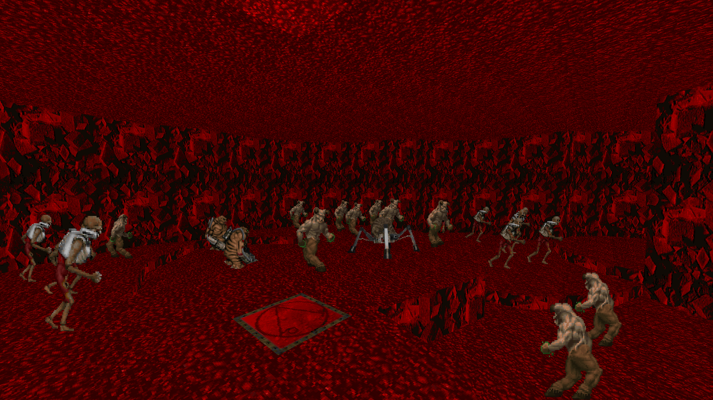

DOWNLOAD LINKS


| Year | 2021 |
| IWAD | doom2.wad |
| Source port | Boom-compatible |
| Game mode(s) | Single-player |
| Map(s) contributed | MAP08 |
Tenth Gear was a community project hosted by Dubbag where participants were given a mere 10 minutes to make a map. And uhh…’Nuff said, I guess. Seeing as I’d dabbled in speedmapping somewhat back in 2020, I saw no reason to not participate and see what I could put together within such a tight time limit.
My personal contribution to Tenth Gear occupies the MAP08 slot. It’s by no means the best map I’ve made – 10 minutes is way too tight a time limit to produce anything super high-quality to begin with – but it was a fun exercise if nothing else. The layout consists of 8 overlapping circles of different sizes and elevations merged together, and the gameplay is a simple, not-too-challenging BFG spamfest.